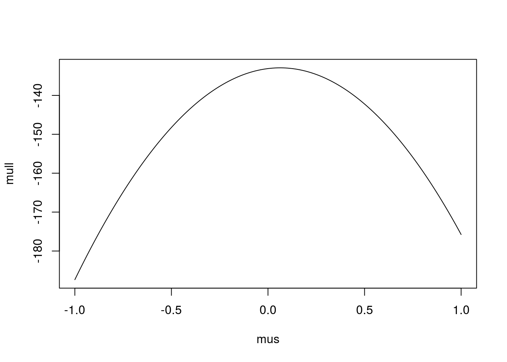
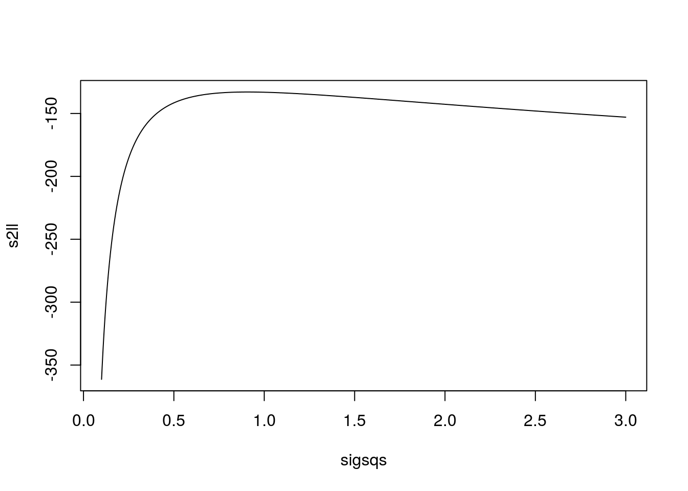
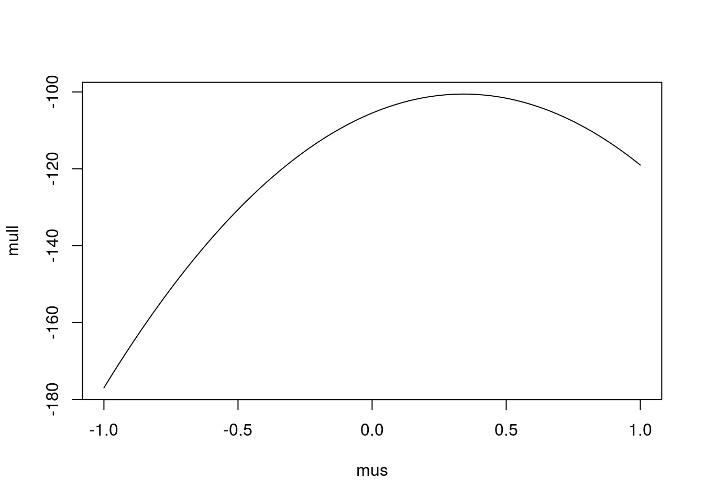
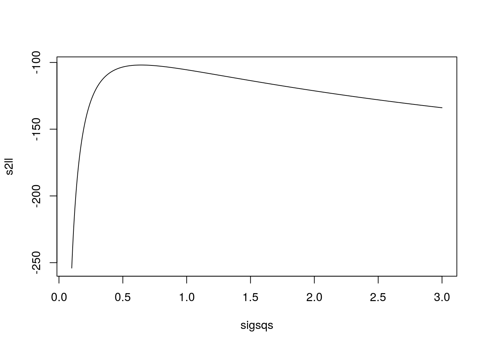
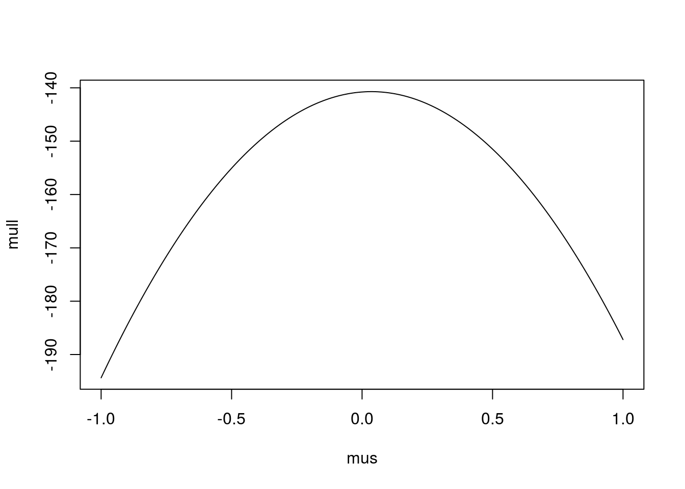
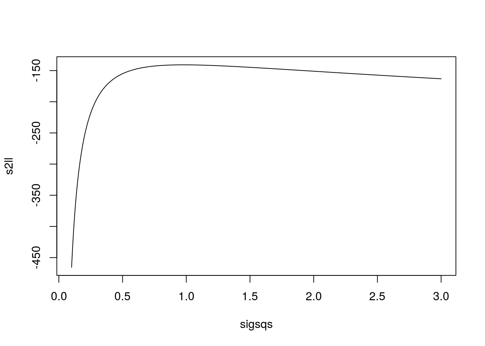
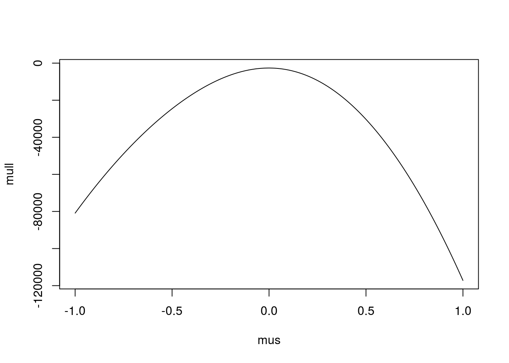
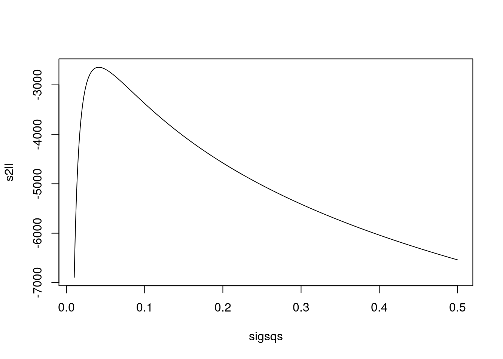
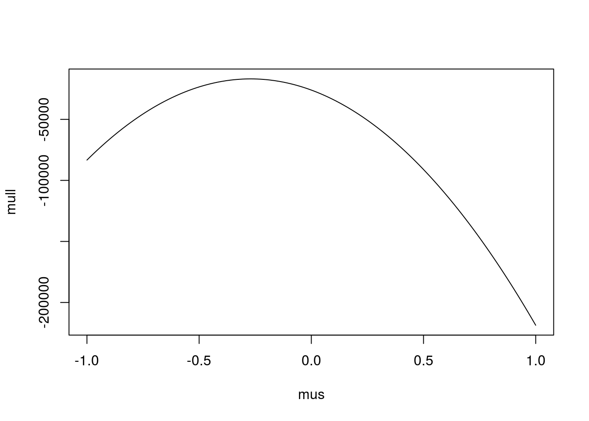
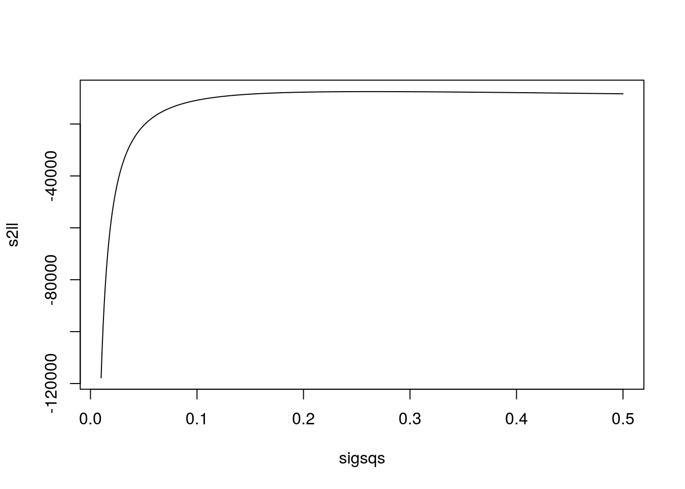

MLE for Censored Data
Suppose you want to know something about a random variable that is only measurable when its value is above a certain threshold. For example, you have a dataset of the concentration of nitrate in a river (measured monthly for the last 100 months), but the analytical instrument has a detection limit below which it stops working. Such data are called censored in the statistical community. How can you do inference on such data? One approach might be to throw out all of the BDL (Below Detection Limit) data and do your inference on the remains of the dataset. A second approach might be to assign some arbitrary value to the BDLs, for example 1/2 the limit, and proceed using this modified dataset. Both of these approaches, particularly the omission of BDLs, are not recommended, and can severely bias your results. (See Dennis Helsel’s myriad papers/book on the subject for reasons why.)
A third approach, much preferred when the data can be assumed to follow a parametric distribution, is to use maximum likelihood estimation. Consider a set of observations of a random variable \(Y\) with pdf \(f(y|\mathbf{\theta})\) and cdf \(F(y|\mathbf{\theta})\). In the usual, non-censored case, maximum likelihood would maximize (with respect to the parameters \(\mathbf{\theta}\)) the function
\[ L(\mathbf{\theta}) = \prod_{i = 1}^n f(y_i | \mathbf{\theta}) \]
A simple modification can be made for censored data of this kind. The modified likelihood function is
\[ L(\theta) = \prod_{i \text{ uncensored}} f(y_i | \theta) \times \prod_{j \text { censored}} F(y_j^* | \theta) \]
where \(y_j^*\) is the censoring threshold for observation \(j\). If \(y_j^* = y^*\) for all censored values (meaning there is only one censoring threshold), then this becomes
\[ L(\theta) = \prod_{i \text{ uncensored}} f(y_i | \theta) \times [F(y^* | \theta)]^{n_c} \]
where \(n_c\) is the number of censored data.
Let’s see an example. I’ll simulate 100 concentration data from a lognormal(0, 1) distribution and censor everything below \(exp(-1) = 0.368\).
set.seed(23)
ysim = exp(rnorm(100))
centhresh = exp(-1)Here’s the function for calculating the log likelihood.
llik = function(mu, sigsq, data, threshold) {
ldat = log(data)
cen = data < threshold
# trm1 = - sum(!cen) / 2 * log(sigsq * 2 * pi)
# trm2 = - 1 / (2 * sigsq) * sum((ldat[!cen] - mu)^2)
# trm3 = sum(cen) * log(pnorm((log(threshold) - mu) / sqrt(sigsq)))
# ll = trm1 + trm2 + trm3
# ll
lls1 = dnorm(ldat[!cen], mean = mu, sd = sqrt(sigsq), log = TRUE)
lls2 = sum(cen) * pnorm(log(threshold), mean = mu, sd = sqrt(sigsq), log.p = TRUE)
ll = sum(c(lls1, lls2))
ll
}Have a look at the resulting log likelihood functions for \(\mu\) and \(\sigma^2\)
mus = seq(-1, 1, length.out = 1000)
sigsqs = seq(0.1, 3, length.out = 1000)
mull = sapply(mus, llik, sigsq = 1, data = ysim, threshold = centhresh)
plot(mus, mull, type = "l")
s2ll = sapply(sigsqs, llik, mu = 0, data = ysim, threshold = centhresh)
plot(sigsqs, s2ll, type = "l")
(muhat1 = mus[which.max(mull)])## [1] 0.06306306(s2hat1 = sigsqs[which.max(s2ll)])## [1] 0.907007Unfortunately, these are not easy to maximize analytically, but as you can see they are both convex (rather, the negative log likelihood is convex) and therefore simple to maximize numerically.
You might be curious as to what the log likelihood functions would look like if I had simply tossed out the sensored data. Let’s find out!
mull = sapply(mus, llik, sigsq = 1, data = ysim[ysim > centhresh],
threshold = centhresh)
plot(mus, mull, type = "l")
s2ll = sapply(sigsqs, llik, mu = 0, data = ysim[ysim > centhresh],
threshold = centhresh)
plot(sigsqs, s2ll, type = "l")
(muhat2 = mus[which.max(mull)])## [1] 0.3413413(s2hat2 = sigsqs[which.max(s2ll)])## [1] 0.6428428The maxima in this case are much farther than the true values I imposed. What about the “half the detection limit” imputation? How would that look?
ysim2 = ysim
ysim2[ysim < centhresh] = centhresh / 2
mull = sapply(mus, llik, sigsq = 1, data = ysim2,
threshold = 0.01)
plot(mus, mull, type = "l")
s2ll = sapply(sigsqs, llik, mu = 0, data = ysim2,
threshold = 0.01)
plot(sigsqs, s2ll, type = "l")
(muhat3 = mus[which.max(mull)])## [1] 0.03503504(s2hat3 = sigsqs[which.max(s2ll)])## [1] 0.9766767Hmm. In this case the imputation actually got closer to reality. But I suspect this is a fluke of this dataset. I’m not going to do all the simulations to show this in general, but I think I can come up with a case where my version works better.
Instead of using \(\sigma^2 = 1\), I’ll use something smaller, say 0.04, and a larger threshold, \(exp(0) = 1\).
set.seed(221)
ysim = exp(rnorm(10000, 0, 0.2))
centhresh = exp(0)Here’s the log likelihood using the censored MLE method:
mus = seq(-1, 1, length.out = 1000)
sigsqs = seq(0.01, 0.5, length.out = 1000)
mull = sapply(mus, llik, sigsq = 0.04, data = ysim, threshold = centhresh)
plot(mus, mull, type = "l")
s2ll = sapply(sigsqs, llik, mu = 0, data = ysim, threshold = centhresh)
plot(sigsqs, s2ll, type = "l")
(muhat1 = mus[which.max(mull)])## [1] -0.001001001(s2hat1 = sigsqs[which.max(s2ll)])## [1] 0.04139139And here’s the imputation method:
ysim2 = ysim
ysim2[ysim < centhresh] = centhresh / 2
mull = sapply(mus, llik, sigsq = 0.04, data = ysim2,
threshold = 0.01)
plot(mus, mull, type = "l")
s2ll = sapply(sigsqs, llik, mu = 0, data = ysim2,
threshold = 0.01)
plot(sigsqs, s2ll, type = "l")
(muhat3 = mus[which.max(mull)])## [1] -0.2712713(s2hat3 = sigsqs[which.max(s2ll)])## [1] 0.2630931Looking at the estimates side-by-side:
knitr::kable(data.frame(method = c("censMLE", "halfBDL"),
muhat = c(muhat1, muhat3), s2hat = c(s2hat1, s2hat3)))| method | muhat | s2hat |
|---|---|---|
| censMLE | -0.0010010 | 0.0413914 |
| halfBDL | -0.2712713 | 0.2630931 |
So here using 1/2 the detection limit for nondetects really biased the results. Meanwhile, the likelihood method was spot on.
A couple of caveats before signing off. First, this worked so well precisely because the distribution of the data was known. If you don’t know what distribution your data come from, maximum likelihood ceases to be meaningful. Second, note that I didn’t properly maximize the likelihood (with respect to the full parameter space) in the above simulations–that would have required a more sophisticated numerical computation, e.g. gradient descent. Here I used which.max to get the argument that maximized the function for a range of parameter values.